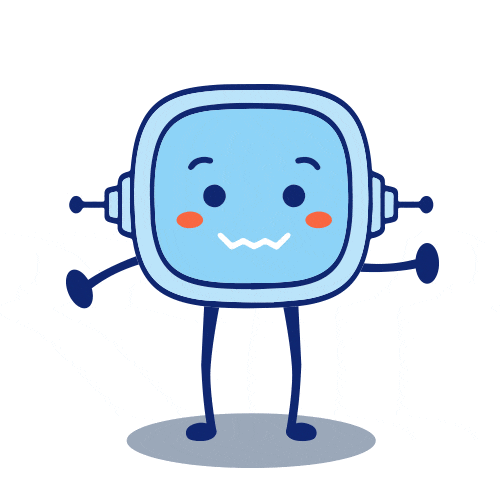

1. ¡Socorro!. Nuestra empresa está siendo atacada por unos hackers

Laura y Enrique, son compañeros de trabajo en una empresa de informática, aunque tienen perfiles muy diferentes dentro de la estructura de la empresa, ambos comparten una afición que es la informática y en concreto, se consideran hackers pues siempre les interesó cómo poder acceder a información oculta y entender los mecanismos que permiten este tipo de accesos "prohibidos" que conocían por el cine y la televisión. En su día, ésta es una de las cosas que les motivó para estudiar informática.
Aunque en su empresa estaban reconocidos por sus conocimiento y su trabajo, decidieron crear una empresa por su cuenta dedicada a la ciberseguridad y así utilizar sus conocimientos para ayudar a otras empresas a salvaguardar sus datos de los ataques de crakers informáticos con malas intensiones.
Una empresa ha sido atacada y recurre a nuestros protagonistas para que esto no vuelva a ocurrir.

Definición:
Persona con grandes conocimientos de informática que se dedica a detectar fallos de seguridad en sistemas informáticos.
Definición:
Un cracker es un individuo que intenta acceder a los sistemas informáticos sin autorización. Estas personas suelen ser malintencionadas, a diferencia de los hackers informáticos, y tienen muchos medios a su disposición para irrumpir en un sistema.
2. ¿Por qué es importante la ciberseguridad?
Actualmente en Internet se está desarrollando una lucha de la que la mayoría de las personas son conscientes. El crecimiento global de las redes y la información, impulsado por la innovación tecnológica, ha permitido a la sociedad crear prosperidad y mejorar la calidad de vida. Sin embargo, este rápido cambio ha generado también un desafío de largo plazo: gestionar los riesgos de seguridad a medida que el mundo depende cada vez más de la cibernética y las amenazas aumentan.
Hay empresas y organismos públicos que manejan información importante entre plataformas conectadas a Internet y todavía no se han parado a pensar qué es un ataque informático o directamente en qué consiste la ciberseguridad.
Puedes ver un caso real de ataque informático en esta noticia de esdiario.es.
Cada día se realizan más transacciones económicas a través de Internet, y se puede acceder a más servicios ofrecidos por empresas. Ante estas noticias seguro que te plantearás si es posible mantener seguros nuestros equipos informáticos, nuestras aplicaciones y nuestras comunicaciones.
INTRODUCCIÓN A LA CIBERSEGURIDAD (INCIBE)
3. ¿Qué vamos a aprender?
El objetivo final, como empresa de ciberseguridad, es crear un plan de protección para nuestra empresa cliente, para ello debemos conocer:
- ¿Qué tipos de ataques informáticos existen?
- ¿Cuál es la diferencia entre hacking y hacking ético?
- ¿Cuántos tipos de hackers hay?
- ¿Qué técnicas de búsqueda de información utilizan?
- ¿Cuáles son las vulnerabilidades utilizadas por los hackers en un sistema informático?
- ¿Qué repercusiones legales tienen estos delitos?
Con esta información finalmente debemos de ser capaces de crear nuestro plan, indicando:
- ¿Qué técnicas de protección deben emplear?
- ¿Cómo pueden implementarse en la empresa?
- ¿Cómo puede una empresa mantener seguros sus datos?
- ¿Cómo debe actuar en caso de un ataque?